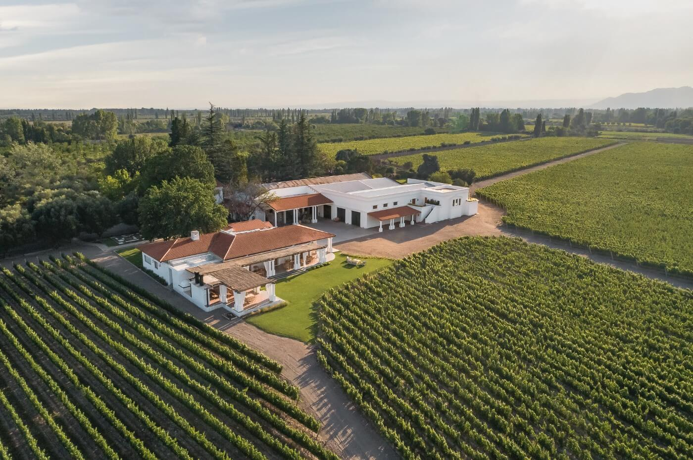

RENOVADA, REABRE SUS PUERTAS AL PÚBLICO LA BODEGA NIETO SENETINER
Nieto Senetiner se prepara las vacaciones de verano. Tras meses de permanecer cerrada por
refacciones, la bodega establecida en 1888 en Vistalba, Luján de Cuyo (Mendoza) abre sus puertas con
una estética renovada y con nuevas propuestas enoturísticas y gastronómicas. La bodega estrena una
sala de ventas ahora integrada casi de forma perfecta.

La bodega establecida en 1888 en Vistalba, Luján de Cuyo (Mendoza) abre sus puertas con una estética
renovada y con nuevas propuestas enoturísticas y gastronómicas
La bodega estrena una sala de
ventas ahora integrada casi de forma perfecta con el paisaje, a través de sus amplias ventanas al
viñedo; una nueva cava con una extensión de casi 13 metros y capacidad para almacenar unas 1000
botellas de vinos; y una galería exterior re-diseñada y amoblada que invita a disfrutar de vistas
únicas de la montaña.
La reapertura viene con nuevas experiencias asociadas con el vino y la
gastronomía. Ahora hay dos dos opciones de degustaciones: «Tradición renovada y Selección del
enólogo, que tienen como protagonista al vino y su historia, logran que quienes las realicen
conecten con las particularidades de cada uno de sus vinos -cuentan desde la bodega-. Con una carta
renovada a cargo del grupo gastronómico Azuca Restauraciones y, bajo el concepto de alimentos de
confort, se puso el foco en ofrecer una opción de comida hogareña, con platos caseros elaborados con
productos de altísima calidad».